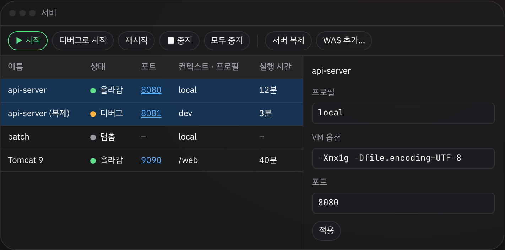
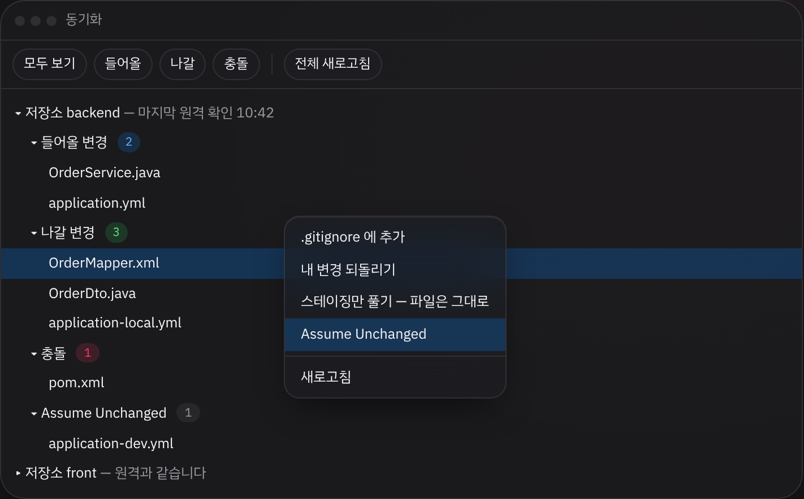
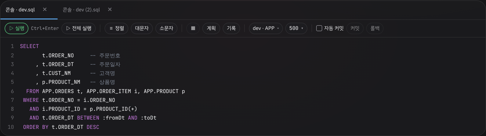
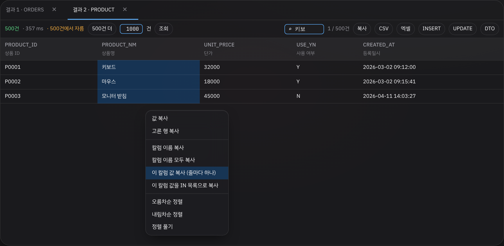
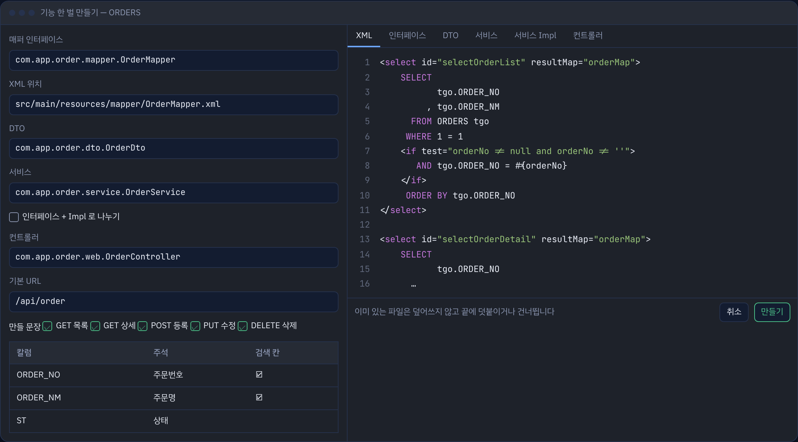
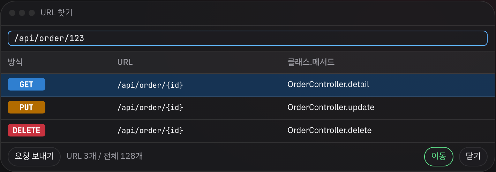

이클립스에 익숙한 사람을 위한 자바 개발 도구입니다. IntelliJ IDEA Community 2026.2.3 을 바탕으로, 이클립스의 서버 창 · Synchronize · 단축키 흐름을 얹고 쓰지 않는 기능은 덜어 냈습니다. 개인 학습용 프로젝트입니다.
서버 창스프링 부트 서버와 WAS 를 한 창에서 띄우고 끕니다.

Eclipse 단축키, 이클립스식 메뉴, 저장하면 자동 빌드, 상위 폴더를 열면 아래 Maven · Gradle 프로젝트 자동 연결.
스프링 부트 서버와 Tomcat · WildFly · WebLogic · JEUS 를 한 창에서 띄우고 끕니다.
Git 여러 저장소와 SVN 을 한 창에서 비교하고 받기 · 커밋 · 올리기.
Oracle · MySQL · PostgreSQL 콘솔, MyBatis 바로 실행, 매퍼 · DTO · 기능 한 벌 만들기.
JDK · Gradle · DB 드라이버를 설치 묶음 하나로 풀고, 한글 폭이 맞는 글꼴이 들어 있습니다.
아래 그림은 사용 설명서에 넣은 화면 모형입니다.
Synchronize저장소별로 들어올 변경 · 나갈 변경 · 충돌을 보고 우클릭으로 되돌리기 · Assume Unchanged.

SQL 콘솔실행 · 정렬 · 실행 계획, 구식 조인과 앞 쉼표로 맞춰 주는 정렬.

결과 창한글 주석 머리, 거르기, 엑셀 · INSERT · UPDATE · DTO 로 내보내기.

기능 한 벌 만들기표 하나로 DTO · 매퍼 · 서비스 · 컨트롤러를 미리 보고 한 번에 만듭니다.

URL 찾기Ctrl+Alt+Shift+U · 실제 주소를 쳐도 그 컨트롤러 메서드로 갑니다.

플러그인설치.bat 이 넣는 것릴리스에서 eiide-262.10968.N.exe 를 받아 설치합니다.
설정 폴더가 만들어집니다.
release\플러그인설치.bat 을 실행합니다.
설정 → Language and Region 에서 Korean.
자세한 설정과 단축키는 사용 설명서에 있습니다.
Windows cmd 기준입니다. 처음은 30분 안팎 걸립니다.
> get-source.bat > python kit\customize.py intellij-community "EI IDE" brand > python kit\customize.py intellij-community "EI IDE" slim > python kit\menu\apply_menu.py intellij-community > python kit\defaults\apply_defaults.py intellij-community > python kit\git-auth\apply_git_auth.py intellij-community > kit\brand\apply_brand.bat > build-windows.bat
결과는 release\eiide-262.10968.N.exe 입니다. 대본별 설명은 사용 설명서의 빌드 절에 있습니다.
바탕인 intellij-community 와 이 저장소의 대본 · 플러그인 소스는 Apache License 2.0 입니다. 들어 있는 글꼴 JetBrainsMonoHangul 은 SIL OFL 1.1, TextMate 문법(vue · svelte · astro)은 MIT 입니다. IntelliJ · JetBrains 이름과 로고는 JetBrains 의 상표입니다.